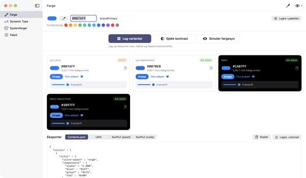
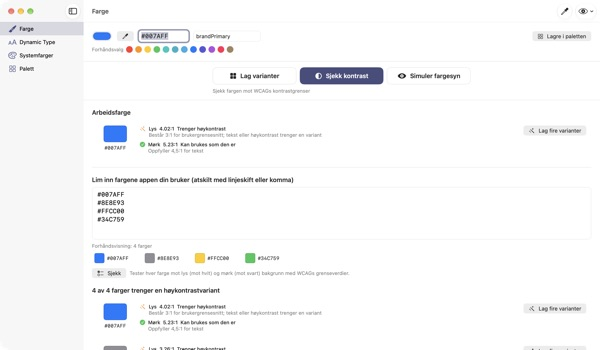
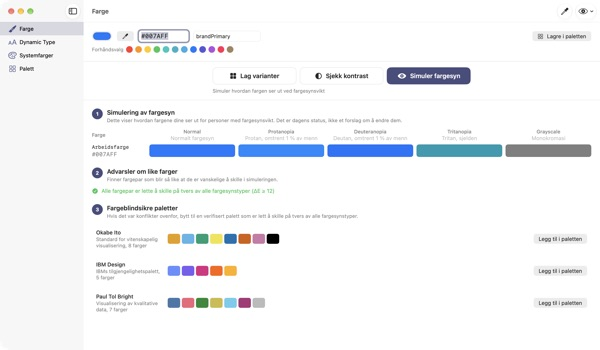
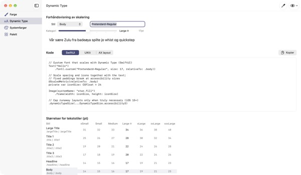

Én farge inn,
fire utseender ut
Systemfarger tilpasser seg selv mørk modus og Øk kontrast. Merkevarefargene dine gjør ikke det. TetraTint tar én farge fra lys modus, lager variantene Lys, Lys høykontrast, Mørk og Mørk høykontrast, og eksporterer dem rett til Xcode.
Alle funksjoner er gratis. Krever macOS 14 eller nyere.

Prøv merkevarefargen din
Lim inn en hex-verdi eller trykk på et forhåndsvalg. Med samme utregning som i appen ser du med en gang alle fire variantene og kontrasten deres.
Har merkevarefargen din forsvunnet i mørk modus?
Den blåfargen du valgte i lys modus ser grumsete ut på svart, og de som har slått på Øk kontrast, klarer knapt å lese teksten. Å lete etter en farge for hvert utseende og regne ut kontrasten for hånd tar en halv dag. TetraTint utleder variantene slik systemfarger endrer seg mellom utseender, og viser med en gang om hver av dem holder mål.
Sjekk alle fargene du bruker på én gang
Lim inn hele hex-listen fra appen, så blir hver farge vurdert: kan brukes som den er, trenger høykontrast eller bare til dekorasjon.
Ett klikk gjør en problemfarge om til fire varianter i paletten. Nyttig også når du forbereder tilgjengelighetsmerket Tilstrekkelig kontrast i App Store.

Se med fargeblindes øyne
Se paletten med protanopi, deuteranopi, tritanopi og i gråtoner, og få varsel om par som blir vanskelige å skille.
Hent de fargeblindvennlige palettene Okabe–Ito, IBM og Paul Tol med ett klikk, eller bruk øyeknappen øverst til høyre for å se hele appen slik.

Egne skrifter følger tekststørrelsen
Se alle 11 tekststiler i 7 størrelser, og dra i en glidebryter for å se de faktiske størrelsene.
Skriv inn PostScript-navnet til skriften, og få kode for UIKit, SwiftUI og @ScaledMetric, pluss kode som bytter oppsett ved stor tekst.

Kom i gang i tre steg
- 1
Legg inn en grunnfarge
Lim inn en hex, hent en farge hvor som helst på skjermen med pipetten, eller velg et forhåndsvalg.
- 2
Sjekk de fire variantene
Les kontrastmerkene, og juster varianter som ikke passer merkevaren, med fargevelgeren.
- 3
Eksporter til Xcode
Kopier eller lagre som Contents.json, .colorset eller UIKit- og SwiftUI-kode.
Slik lages variantene, og dette betyr merkene
- Lys (Any)
- Fargen din slik du skrev den inn
- Lys høykontrast
- Litt mer mettet og mørkere til den når 4.5:1 på hvitt
- Mørk
- Litt lysere og klarere (lyshet +5, metning +3)
- Mørk høykontrast
- Lysere til den når 7:1 på svart
- AA-tekst
- Minst 4.5:1 mot bakgrunnen, passer for brødtekst
- UI 3:1
- Minst 3:1, holder for knapper og symboler, men ikke for tekst
- Lav
- Under 3:1, ikke bruk til tekst, symboler eller status
- Eksport
- Contents.json · .colorset · UIKit · SwiftUI, eller hele paletten som én .xcassets
Referanseverdiene for systemfarger kommer fra Apples Human Interface Guidelines og kan endres med systemoppdateringer. Bruk API-ene for systemfarger i den ferdige appen.
Alle funksjoner er gratis
TetraTint
- Lag og eksporter fire varianter
- Kontrastsjekk for en liste med hex-verdier
- Simulering av fargesyn og fargeblindvennlige paletter
- Dynamic Type-tabell og kodegenerering
- Oversikt over systemfarger, eksport av palett som .xcassets
Støtt utvikleren (valgfritt)
- Ingenting er låst
- Hvis appen hjalp deg, kan du gi tips under Innstillinger
Tips endrer ingen funksjoner.
Ingen konto, ingen reklame. Paletten blir bare på denne Macen.
Vanlige spørsmål
De genererte variantene passer ikke til merkevaren vår.
Juster hver variant med fargevelgeren på kortet. Lag alle på nytt forkaster de manuelle endringene og utleder alt på nytt fra grunnfargen.
Hvordan regnes variantene ut?
De følger hvordan Apples systemfarger faktisk endrer seg mellom utseender: litt lysere og klarere i mørk, minst 4.5:1 på hvitt i lys høykontrast og minst 7:1 på svart i mørk høykontrast.
Hva betyr et varsel i simuleringen av fargesyn?
At forskjellen mellom to farger (ΔE) faller under 12 i den simuleringen, så de blir vanskelige å skille. Ikke stol på farge alene: legg til symboler, mønstre eller etiketter, eller bytt til en fargeblindvennlig palett.
Hvordan får jeg en egen skrift til å støtte Dynamic Type?
Skriv inn PostScript-navnet til skriften under Dynamic Type og velg en stil for å få kode for UIKit, SwiftUI og @ScaledMetric. I tilgjengelighetsstørrelser blir Body over tre ganger så stor, så unngå faste høyder og lineLimit(1).
Eksporterte farger ser annerledes ut enn systemfargene i appen min.
Referanseverdiene kommer fra Human Interface Guidelines og kan endre seg mellom systemversjoner. Bruk alltid API-ene UIColor eller Color for systemfarger.
Hvor lagres paletten min?
Bare på Macen din. Ingenting synkroniseres til skyen eller sendes noe sted. Se personvernerklæringen for detaljer.
Lagres en farge jeg henter med pipetten?
Nei. Bare fargeverdien i punktet du velger, leses og brukes som arbeidsfarge. Ingen skjermbilder lagres eller sendes.
Hvilke Mac-maskiner fungerer den på?
macOS 14 (Sonoma) eller nyere. Når du eksporterer, velger du selv hvor filene lagres.
Feil, ideer eller spørsmål? Skriv til leeo@kakao.com. Vi svarer vanligvis innen 2–3 dager.